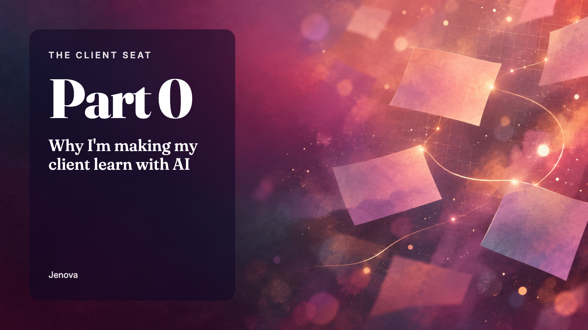
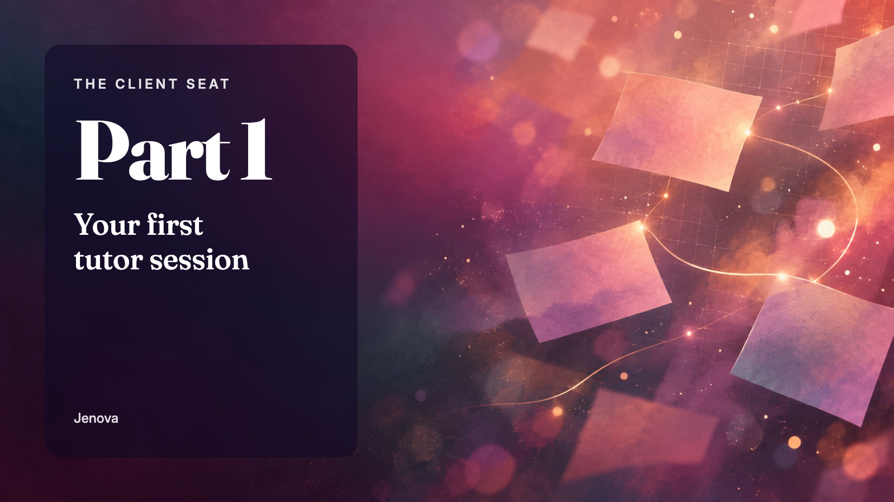
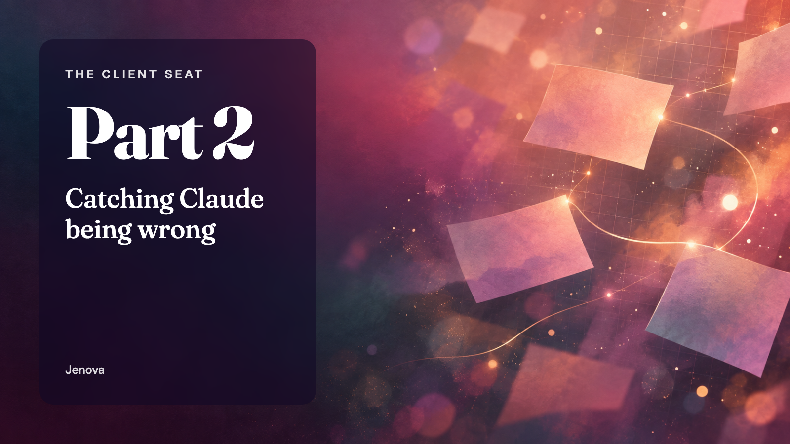
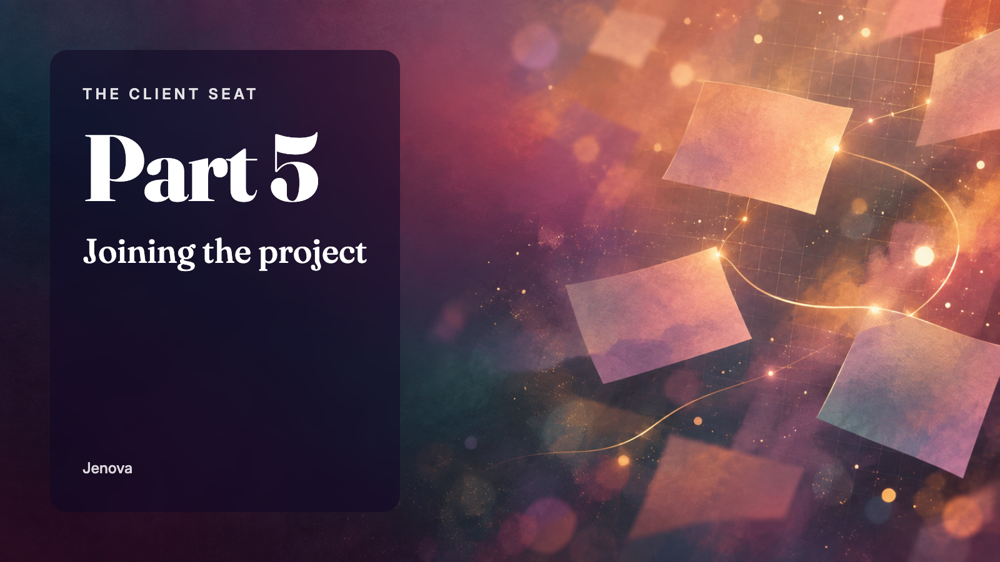
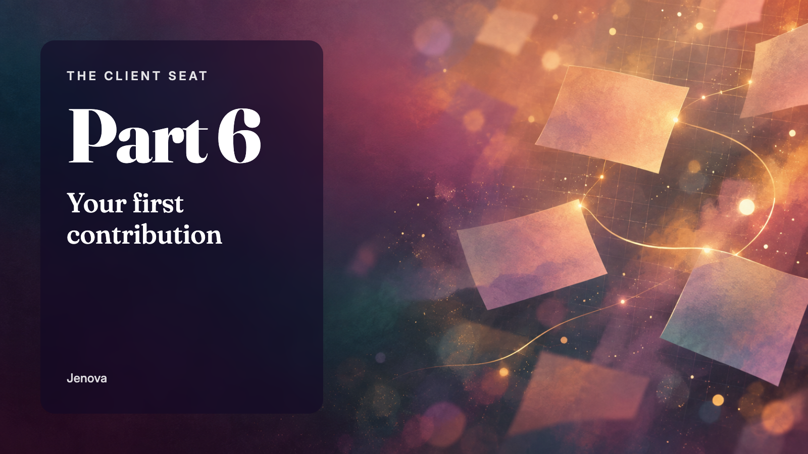
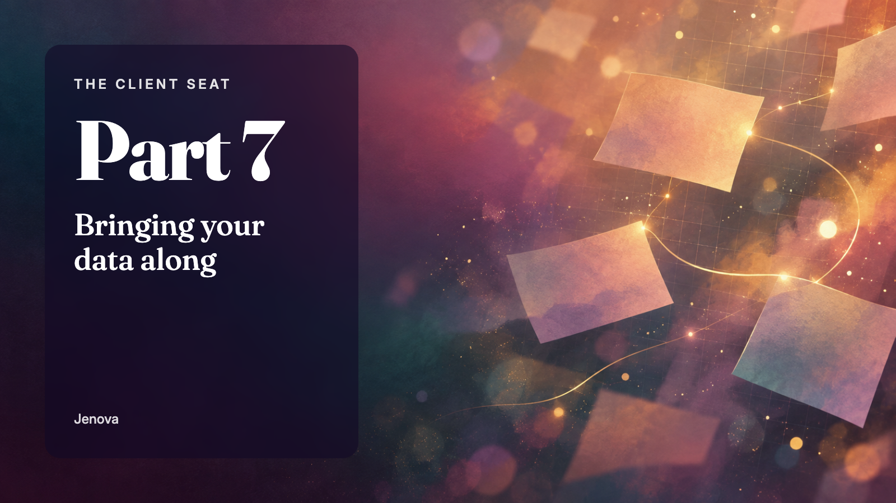
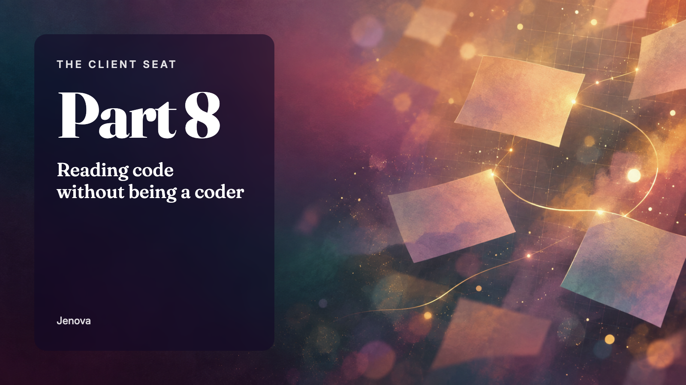
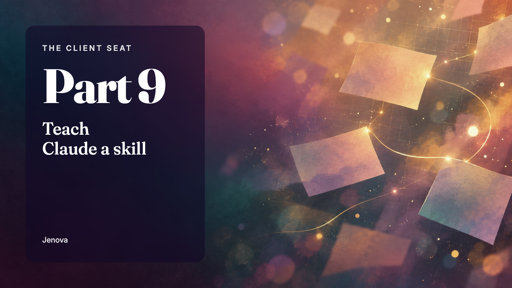
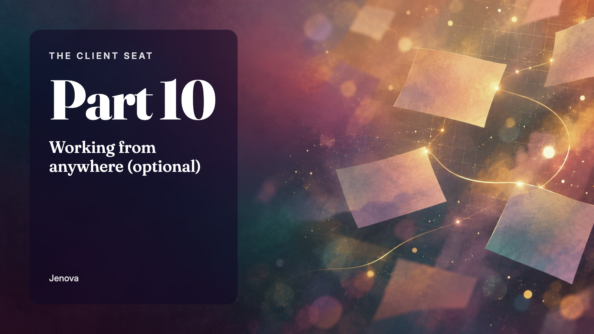
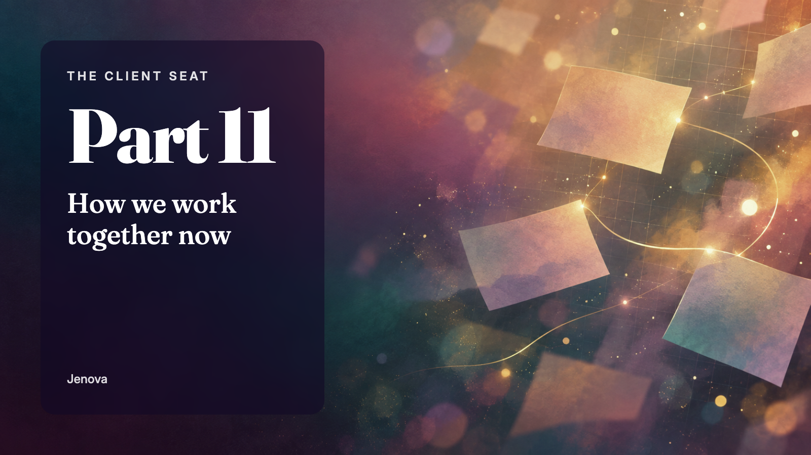

Learning a real software project with AI as your tutor. The series is published on Medium; this page hosts the banner images.

https://jenova-marie.github.io/the-client-seat/assets/banners/00-why-learn-with-ai.png
https://jenova-marie.github.io/the-client-seat/assets/banners/01-your-first-tutor-session.png
https://jenova-marie.github.io/the-client-seat/assets/banners/02-catching-claude-being-wrong.pnghttps://jenova-marie.github.io/the-client-seat/assets/banners/03-dont-fear-the-clear.pnghttps://jenova-marie.github.io/the-client-seat/assets/banners/04-what-a-repo-actually-is.png
https://jenova-marie.github.io/the-client-seat/assets/banners/05-joining-the-project.png
https://jenova-marie.github.io/the-client-seat/assets/banners/06-your-first-contribution.png
https://jenova-marie.github.io/the-client-seat/assets/banners/07-bringing-your-data-along.png
https://jenova-marie.github.io/the-client-seat/assets/banners/08-reading-code-without-being-a-coder.png
https://jenova-marie.github.io/the-client-seat/assets/banners/09-teach-claude-a-skill.png
https://jenova-marie.github.io/the-client-seat/assets/banners/10-working-from-anywhere.png
https://jenova-marie.github.io/the-client-seat/assets/banners/11-how-we-work-together-now.png